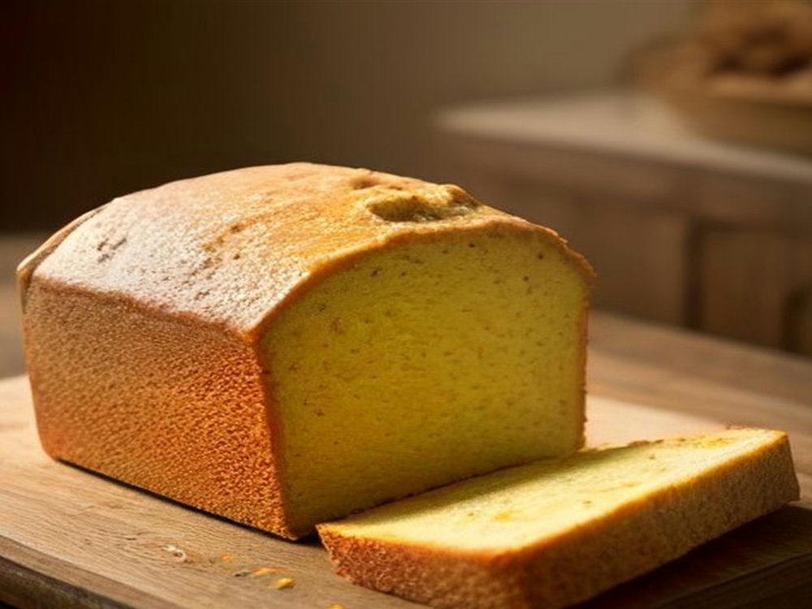

¡Gran Lanzamiento!
El Queque Casero de William
Tras meses de pruebas con la receta familiar, presentamos nuestro queque artesanal horneado con naranjas del valle y mantequilla cajamarquina. Suave, sumamente esponjoso y con una humedad que perdura durante días.
Presentaciones disponibles:
- Molde corona familiar entero (12 a 14 porciones): S/ 18.00
- Porción individual con café: S/ 2.50